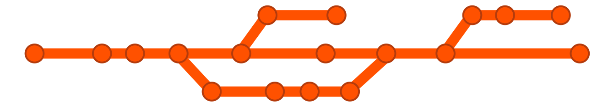

How to make your research reproducible
Vaclav Petras
US-IALE, Baltimore
April 9-13, 2017
Scientists rely on software
It's impossible to conduct research without software,
say 7 out of 10 UK researchers
— Hettrick et al, UK Research Software Survey 2014
scientific community we have been largely unsuccessful in sharing our research methods and results in a reproducible way.
current scientific publishing requires more than writing a paper
new ways of sharing our research
Software [...] developed as part of novel methods is as important
for the method's implementation [...]
Such software [...] must be made available to readers upon publication.
—Nature Methods - 4, 189 (2007)
Software solutions for software problem
Screenshots

Scripting
Bash:
r.in.lidar input=points.las output=elevation -e
Python:
from grass.script import run_command
run_command("r.in.lidar", input="points.las", output="elevation", flags="e")
R:
library(rgrass7)
execGRASS("r.in.lidar", input="points.las", output="elevation", flags="e")
Jupyter Notebook
- interactive document with text, code, and figures

File versions

Revision control
Git

git commit script.py -m "replaced part of the main equation"
There are a GUIs as well.
Finally Docker and Vagrant let us wrap entire workflow into one runtime environment
so that our species distribution model can be used without our personal laptop.
This talk will discuss several tools for reproducible research
and show practical examples which will make your life and lives of your colleagues easier.
A terrain modeling paper will serve as an example of sharing a full description
of a published method.
A landscape change model will be used to demonstrate reusable research.
Finally, a paper about vegetation structure will show how all pieces
of the puzzle fit together.
Tools for open geospatial science
- open science course, fall 2017